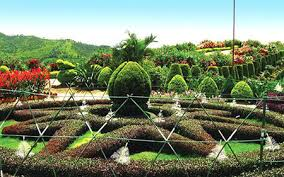

Thoubl

Thoubal is a town, a municipal council with 18 municipal wards and district Headquarters in Thoubal district in the Indian state of Manipur. It is one of the larger towns of Manipur. it is a idyllic place with lots of lakes and rivers, paddy fields, gardens, and fun loving, simple people. It is also the window to South-East Asia as the Trans-Asian highway (AH1) passes through it. It is well connected with Imphal, Kakching, Moreh, Yairipok, etc. Main places of attraction are Chinga Lairembi temple, Tomjing ching, Panthoibee temple, Thoubal bazar, Khangabok Menjor garden, etc.

HOW TO REACH ?
Nearest Airport:Imphal
Nearest Railway Station:Thoubl
Nearest Bus Stand:Thoubl